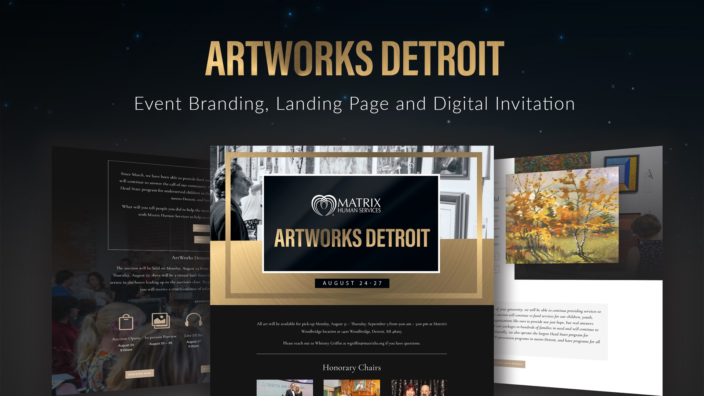

Event Branding + Digital Campaign
ArtWorks Detroit
A digital-first fundraising campaign that transformed an online art auction into a premier annual event — increasing visibility and donor engagement.
Trusted by Mission-Driven Organizations.
Over a decade supporting civic and nonprofit initiatives in Detroit.